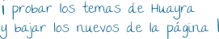

Configurar la apariencia del Escritorio
De Huayra
Como Huayra usa un Entorno de escritorio libre como MATE, te deja modificar la apariencia de todo el escritorio. No solamente cambiar el fondo de pantalla, sino que también Huayra te permite elegir diferentes:
- Temas 
- Fondos del escritorio
- Íconos
- Tipografías
- Interfaz de usuario.
{kind=link}
- Hacé clic en el ícono de Configuración del sistema en el Panel Superior a la derecha.
- Hacé clic en "Apariencia"
Contenido |
[editar] Preferencias del Tema
Un tema es un grupo de ajustes coordinados que especifican la apariencia visual de una parte del Escritorio. Podés elegir temas para cambiar la apariencia del Escritorio, use la solapa Temas de la herramienta de preferencias para seleccionar un tema. Podés elegir de una lista de temas disponibles desarrollados por el Equipo de Diseño de Huayra y otros desarrollados por la comunidad de Software Libre. Con Huayra no tenés por qué usar los temas del resto, vos también podés crearte tu propio tema.
Un tema esta armado con varios ajustes para diferentes partes (controles, bordes de ventana, íconos, etc.). Pero no tenés por qué usar el mismo tema para las ventanas que para los íconos, podés combinarlos como quieras. Los elementos que componen un tema son:
Controles
El ajuste de controles para un tema determina la apariencia visual de las ventanas, paneles y miniaplicaciones. Además determinan la apariencia visual de los elementos de interfaz estándar que aparecen en ventanas, paneles y miniaplicaciones. Algunas de las opciones de ajustes de controles que están disponibles se han diseñado para necesidades especiales de accesibilidad. Podés elegir una opción para el ajuste del control desde la solapa Controles en Personalizar tema.
Colores
El ajuste de colores para un tema determina la apariencia de los colores de varios elementos de la interfaz de usuario. Podés elegir varios pares de colores desde la solapa Colores en la ventana Personalizar tema.
Marco de la ventana
El ajuste del borde de la ventana para un tema únicamente determina la apariencia de los bordes alrededor de la ventana. Podés elegir una opción para el ajuste del marco de la ventana en la solapa Borde de la ventana Personalizar tema.
íconos
El ajuste de íconos para un tema determina la apariencia de los íconos en paneles y en el fondo del escritorio. Podés elegir una opción para el ajuste del ícono desde la solapa íconos en la ventana Personalizar tema.
Puntero
El ajuste de puntero para un tema determina la apariencia y el tamaño del puntero del mouse podés elegir una opción para el ajuste del puntero desde la solapa Puntero en la ventana Personalizar tema.
[editar] Para crear un tema personalizado
Los temas que se listan en la sección Temas son diferentes combinaciones de opciones de controles, opciones de marcos de ventanas, y opciones de íconos. Podés crear un tema personalizado que use diferentes combinaciones de opciones de controles, borde de las ventanas y opciones de íconos y guardarlo como propio.
Para crear un tema personalizado:
- Hacé clic en el ícono de Configuración del sistema en el Panel Superior a la derecha y luego en "Apariencia"
- Seleccioná un tema de la lista de temas.
- Hacé clic en el botón Personalizar. Se muestra un diálogo Detalles del tema.
- Seleccioná la opción de controles que querés usar en el tema personalizado de la lista en la solapa Controles. La lista de opciones de controles disponibles incluye varias opciones para usuarios con requerimientos de accesibilidad.
- Hacé clic en la solapa Borde de ventana para mostrar la solapa Borde de ventana. Seleccioná la opción del marco de ventana que querés usar en tu tema personalizado de la lista de opciones disponibles. La lista de opciones de marcos de ventana disponibles incluye varias opciones para usuarios con requisitos de accesibilidad.
- Hacé clic en la solapa íconos para mostrar la solapa íconos. Seleccioná la opción de íconos que querés usar en tu tema personalizado de la lista de opciones disponibles. La lista de opciones de íconos disponibles incluye varias opciones para usuarios con requisitos de accesibilidad.
- Hacé clic en Cerrar para cerrar el diálogo Personalizar tema.
- En la herramienta de preferencias Apariencia, hacé clic en el botón Guardar como.... Se muestra un diálogo Guardar tema como.
- Tecleá un nombre y una pequeña descripción para el tema personalizado en el diálogo. Después hacé clic en Guardar. El tema personalizado ahora aparece en su lista de temas disponibles.
[editar] Para instalar un tema nuevo
Podés añadir un tema a la lista de temas disponibles. El tema nuevo debe ser un archivador empaquetado y comprimido. Esto es, el tema nuevo debe estar en un archivo tar.gz..
Podés instalar un tema nuevo:
- Hacé clic en el ícono de Configuración del sistema en el Panel Superior a la derecha y luego en "Apariencia"
- Hacé clic en el botón Instalar.... Se mostrará un diálogo de selección.
- Buscá y seleccioná el archivo que descargaste y hacé clic en Abrir.
- Hacé clic en el botón Instalar... para instalar el tema nuevo.
[editar] Preferencias del fondo del escritorio
El fondo del escritorio es el color o la imagen que se aplica a tu escritorio. Podés cambiar el fondo con solo hacer clic con el botón derecho del mouse sobre la imagen del fondo y elegir "Cambiar el fondo del escritorio", así como desde el menú Huayra/Sistema ▸ Preferencias. A continuación aparecerán los fondos de escritorio con los que viene Huayra por defecto.
También podés buscar una imagen en tu computadora pulsando el botón + Añadir. Cualquier imagen que agregues de esta manera va a aparecer en la lista de imágenes. Podés quitarla de la lista seleccionándola y pulsando el botón "-". Quitar una imagen de la lista no eliminará el archivo original.
Otra opción es editar cualquier imagen descargada de Internet para adaptarla a la pantalla usando las aplicaciones libres de Huayra (Ver ¿Con qué aplicación edito mis fotos e imágenes? ). La resolución de pantalla por definición de las computadoras de Conectar Igualdad es 1024x600px. Para personalizar el fondo del escritorio:
- Seleccioná una imagen para el fondo del escritorio. La imagen se superpone sobre el color de fondo del escritorio. El color de fondo del escritorio es visible si se selecciona una imagen transparente, o si la imagen no cubre el escritorio por completo.
- Seleccioná un color para el fondo del escritorio. Podés seleccionar un color sólido, o crear un efecto de degradado con dos colores. Un efecto de degradado es un efecto visual donde un color se mezcla gradualmente en otro color.
Las Preferencias del fondo del escritorio muestra las preferencias del fondo que podés modificar:
| Elemento de diálogo | Descripción |
|---|---|
| Fondo del escritorio | Elegí una imagen de la lista. Alternativamente, podés usar el botón Añadir para elegir cualquier imagen en tu computadora. * Centrado: Muestra la imagen en el medio del escritorio, respecto del tamaño original de la imagen. * Rellenar pantalla: Alarga la imagen para cubrir el escritorio, manteniendo las proporciones de la imagen si es necesario. * Escalado: Alarga la imagen hasta que la imagen llega a los bordes de la pantalla, manteniendo la proporción de la imagen. * Ampliación: Alarga la dimensión más pequeña de la imagen hasta que la imagen llega a los bordes de la pantalla; podés que se recorte la imagen en la otra dimensión. * Mosaico: Duplica el tamaño original de la imagen tanto como sea necesario e imprime las imágenes unas junto a otras para que cubran el escritorio entero. |
| Estilo | Para especificar cómo mostrar la imagen, seleccioná una de las opciones siguientes de la lista desplegable Estilo: |
| Añadir | Hacé clic en Añadir... para buscar una imagen en tu computadora. Se te presentará un selector de archivos estándar. Elegí la imagen que quieras y hacé clic en Abrir. |
| Quitar | Elegí la imagen que querés quitar y después hacé clic en Quitar. Esto quita la imagen de la lista de tapices disponibles, sin embargo no borra la imagen de tu computadora. |
| Colores | Para especificar un esquema, usá las opciones en la lista desplegable Estilo y los botones del selector de colores.
Podés especificar un esquema de colores de las siguientes formas: |
[editar] Preferencias de la interfaz
Podés usar la sección Interfaz en la herramienta de preferencias Apariencia para personalizar la apariencia de los menús, barras de menú y barras de herramientas para las aplicaciones.
Al mismo tiempo que se hacen cambios a los ajustes, el visor de vista previa en la ventana se actualiza. Esto te permite ver los cambios si no hay ventanas de aplicaciones abiertas en ese momento.
Mostrar íconos en los menús
Seleccioná esta opción para mostrar un ícono al lado de cada elemento en los menús de aplicaciones. No todos los elementos del menú tienen un ícono.
Aceleradores de menú editables
Seleccionar esta opción te permite definir combinaciones de teclas nuevas para los elementos del menú. Para cambiar una tecla de acceso rápido de una aplicación, abrí el menú y con el puntero del mouse en el elemento del menú que querés cambiar, ingresá la combinación de teclas nueva. Para quitar una combinación de teclas, pulsá Retroceso o Suprimir.
No hay forma de restaurar la combinación de teclas original o predeterminada de un comando.
Esta característica no mantiene combinaciones de teclas que son comunes normalmente a todas las aplicaciones, como Ctrl+C para Copiar. Esto podría conducir a inconsistencias en sus aplicaciones.
Etiquetas de los botones de la barra de herramientas
Elegí una de las opciones siguientes para especificar qué mostrar en las barras de herramientas en tus aplicaciones:
- Texto bajo los íconos: Seleccioná esta opción para mostrar las barras de herramientas con texto así como un ícono para cada botón.
- Texto al lado de los íconos: Seleccioná esta opción para mostrar las barras de herramientas con un ícono solo en cada botón, y con texto en los botones más importantes.
- Sólo íconos: Seleccioná esta opción para mostrar las barras de herramientas con sólo un ícono en cada botón.
- Sólo texto: Seleccioná esta opción para mostrar las barras de herramientas sólo con texto en cada botón.
[editar] Preferencias de ventanas
Podés usar la herramienta de preferencias Ventanas para personalizar el comportamiento de las ventanas en el Escritorio.
La "Preferencias de ventanas" muestra los ajustes del mouse que podés modificar.
| Elemento de diálogo | Descripción |
|---|---|
| Seleccionar ventanas cuando el mouse se mueva por encima de ellas | Seleccioná esta opción para darle el foco a una ventana cuando apunta a la ventana. La ventana retiene el foco hasta que apunta a otra ventana. |
| Elevar las ventanas seleccionadas tras un intervalo | Seleccioná esta opción para elevar ventanas un tiempo después de que la ventana reciba el foco. |
| Pulsá dos veces en la barra de título para realizar la siguiente acción | Seleccioná el comportamiento que querés que ocurra cuando pulsás dos veces en un título de ventana. Seleccioná una de las siguientes opciones: * Maximizar: Maximiza la ventana. * Maximizar verticalmente: Maximiza la ventana verticalmente si cambiar su anchura. * Maximizar horizontalmente: Maximiza la ventana horizontalmente sin cambiar su altura. * Minimizar: Minimiza la ventana. * Enrollar: Enrolla la ventana. * Ninguna: No hacer nada. Si una ventana ya está maximizada o enrollada, pulsar dos veces sobre la barra de título la devolverá a su estado normal. |
| Para mover una ventana, pulsá y mantené pulsada esta tecla después agarre la ventana | Seleccioná la tecla para pulsar-y-mantener cuando arrastra una ventana para mover la ventana. |
[editar] Preferencias del salvapantallas
Un salvapantallas muestra imágenes en movimiento en tu pantalla cuando tu equipo no se está usando. Los salvapantallas también ayudan a prevenir que los monitores antiguos se dañen por mostrar la misma imagen durante largos periodos de tiempo. Para detener el salvapantallas y volver al escritorio, mové el mouse o pulsá una tecla del teclado.
Usá la herramienta de preferencias Salvapantallas para establecer el tipo de salvapantallas, el tiempo antes de que el salvapantallas se inicie, y si se requiere una contraseña para volver al escritorio.
Podés modificar los siguientes ajustes:
Salvapantallas
Seleccioná el Tema del salvapantallas de la lista. Una versión reducida del tema del salvapantallas seleccionado se mostrará. Pulsá Vista previa para mostrar el tema seleccionado a pantalla completa. Durante la vista previa, usá las teclas de flecha en la parte superior de la pantalla para moverse a través de la lista de temas.
- El tema Ennegrecer pantalla no muestra ninguna imagen. Sólo muestra una pantalla en negro.
- El tema Aleatorio selecciona un salvapantallas a mostrar de la lista aleatoriamente.
Qué salvapantallas se muestran en el resto de la lista depende de su distribuidor o fabricante.
Considerá que el equipo está inactivo después de...
Tu equipo está inactivo después de transcurrir este tiempo sin recibir entradas, tales como mover el mouse o pulsar teclas. Esto quizá afecte a la gestión de energía (el monitor quizá se apague, por ejemplo) o la mensajería instantánea (las aplicaciones de chat pueden poner su estado como «ausente»). Usá el deslizador para establecer el espacio de tiempo en minutos u horas.
Activar el salvapantallas cuando la sesión está inactiva
Seleccioná esta opción para iniciar el salvapantallas después del tiempo establecido.
Bloquear la pantalla cuando el salvapantallas esté activo
Cuando esta opción esté seleccionada, el salvapantallas te pedirá su contraseña cuando intente volver al escritorio. Para más acerca de bloquear tu pantalla, ver la ¿Bloquear la pantalla?
[editar] Apariencia del fondo del visor de archivos
En el visor de Archivos y carpetas podés configurar el fondo del visor, así como asignarle emblemas a los íconos de tus carpetas o archivos. Hacé clic en "Editar" y luego en "Fondos y emblemas". Con solo arrastrar los íconos o los fondos vas a poder darle una apariencia completamente diferente a cómo visualizas tus archivos y carpetas.
[editar] Preferencias de tipografías
Usá la solapa Tipografías en la herramienta de preferencias Apariencia para elegir qué tipografías se usan en las distintas partes del escritorio, y la forma en se muestran las tipografías en la pantalla.
[editar] Elección de tipografías
El botón de selección de tipografías muestra el nombre de la tipografía y su tamaño de punto. El nombre también se muestra en tipo negrita, cursiva o regular.
Para cambiar la tipografía, hacé clic en el botón del selector de tipografía. El diálogo de selección de tipografía se abre. Seleccioná la familia del tipo, el estilo, y el tamaño del punto de las listas. El área de previsualización muestra su selección actual. Hacé clic en el botón Aceptar para aceptar los cambios y actualizar el escritorio.
Podés elegir tipografías para las siguientes partes del escritorio:
Tipografía de aplicación
Esta tipografía se usa en los menús, barras de herramientas y cajas de diálogo de las aplicaciones.
Tipografía de documento
Esta tipografía se usa para mostrar los documentos en las aplicaciones.
Tipografía de escritorio
Esta tipografía se usa en las etiquetas de los íconos en el escritorio.
Tipografía del título de la ventana
Esta tipografía se usa en las barras de título de las ventanas.
Tipografía de anchura fija
Esta tipografía se usa en la aplicación Terminal y las aplicaciones que tienen algo que ver con la programación.
[editar] Renderizado tipográfico
Podés establecer las siguientes opciones respecto a cómo se muestran las tipografías en la pantalla:
Renderizado
Para especificar cómo renderizar tipografías en su pantalla, Seleccioná una de las opciones siguientes:
- Monocromo: Renderiza las tipografías sólo en blanco y negro. Los bordes de los caracteres quizá aparezcan aserrados en algunos casos debido a que los caracteres no son suavizados. Suavizar es un efecto que se aplica a los bordes de los caracteres para hacerlos parecer más suaves.
- Mejores formas: Suaviza las tipografías donde sea posible. Usá esta opción para monitores estándar de tubo de rayos catódicos (CRT).
- Mejor contraste:Ajusta las tipografías para darles el contraste más afilado posible, y también suaviza las tipografías, para que los caracteres tengan bordes suaves. Esta opción quizá aumente la accesibilidad del escritorio para los usuarios que tengan dificultades visuales.
- Suavizado se subpíxel (LCDs): Usa técnicas que explotan la forma de los píxeles de las pantallas de cristal líquido (LCD) para renderizar las tipografías más suavemente. Usá esta opción para LCDs o pantallas planas.
Detalles
Pulse en este botón para especificar más detalles de cómo renderizar tipografías en su pantalla.
- Resolución (puntos por pulgada): Utilizá esta caja incrementable para especificar la resolución a usar cuando su pantalla renderice tipografías.
- Suavizado: Seleccioná una de las opciones para especificar cómo suavizar las tipografías.
- Hinting: Hinting es una técnica de renderizado de tipografías que mejora la calidad de las tipografía a pequeño tamaño y a bajas resoluciones de pantalla. Seleccioná una de las opciones para especificar cómo aplicar el hinting a sus tipografías.
- Orden de subpíxel: Seleccioná una de las opciones para especificar el orden de color del subpíxel para sus tipografías. Usá esta opción para pantallas LCD o planas.